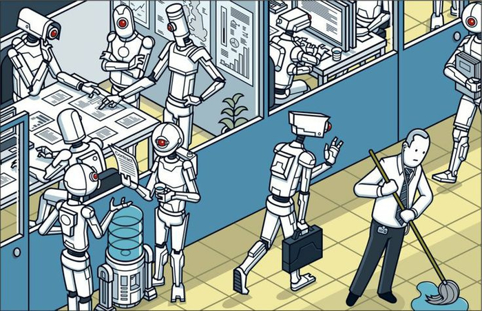
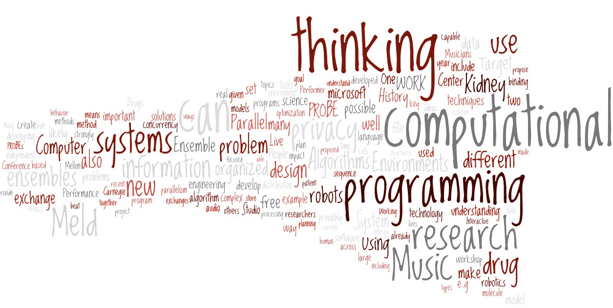

Navigating AI Ethics in IT
Using Computational Thinking to Deconstruct Ethical Dilemmas & Build a Responsible Digital Future
Artificial Intelligence is profoundly transforming the way the information technology industry works. From code generation to system operations, AI brings unprecedented efficiency gains to IT professionals, along with complex ethical challenges. As future IT professionals, we need not only technical skills but also the ability to identify, analyse and resolve ethical dilemmas.
Target Audience: IT students, junior software engineers, system architects, and all technology practitioners who wish to apply ethical principles in their work.
Website Purpose: Using a realistic ethical dilemma, this site demonstrates how to apply the eight elements of Computational Thinking to deconstruct problems, assess impacts on stakeholders, and formulate responsible action plans.
Ethical Dilemma: When AI Threatens Your Job

Scenario
You are a software engineer working for a technology company. Your manager asks you to use AI tools to write an automation program that can completely replace the core work currently done by you and your entire department. You follow the instructions, complete and test the program — it works perfectly. However, once deployed, you and all your colleagues will lose your jobs. Your manager is satisfied and demands immediate deployment.
Core conflict: Obey deployment > colleagues lose jobs, personal conscience is troubled; Refuse deployment > may be accused of insubordination, hindering efficiency, facing disciplinary action. As an IT professional, how do you decide?
Relevance to the IT Profession: With the maturity of AI code generation, automated testing and intelligent operations, "technological unemployment" is no longer science fiction. Do IT professionals have a responsibility to consider the impact on human labour and professional dignity while driving technological efficiency? The Australian Computer Society (ACS) Code of Ethics emphasises "serving the public interest" and "respect for others", providing an ethical compass for this dilemma.
Deconstructing with Computational Thinking

Computational Thinking (CT) is not just a programming tool; it is a framework for systematically breaking down complex problems. The following analysis applies eight core CT elements to this dilemma:
| CT Element | Meaning | Application to the Dilemma |
|---|---|---|
| 1. Decomposition | Break a complex problem into smaller parts | Break down into: 1 technical effectiveness; 2 professional responsibility; 3 ethical impact (colleagues/self); 4 legal/contractual aspects. Analyse each sub-problem separately. |
| 2. Pattern Recognition | Identify trends or commonalities | Recognise the pattern of "technology replacing labour". The impact of AI is more far-reaching. Draw from precedents in manufacturing, customer service, etc., to find common response strategies. |
| 3. Abstraction | Focus on core issues, ignore minor details | Extract the core tension: Company efficiency/profit vs. employee employment/dignity. Filter out emotional factors to focus on ethical essence. |
| 4. Algorithm Design | Design step-by-step solutions | 1 Communicate with manager about alternatives; 2 Assess redeployment possibilities; 3 Seek ethics committee support; 4 If necessary, refuse deployment. Formulate decision steps. |
| 5. Evaluation | Evaluate risks and consequences of options | Comply: short-term peace but long-term job loss & violates ethics; Resist: possible dismissal but upholds integrity; Escalate: may change decision. Assess probability & outcomes. |
| 6. Logical Reasoning | Derive causal chains | Deploy program > department redundancy > collective layoffs > colleagues + self lose jobs. Logic shows that obeying does not protect one's own long-term employment but accelerates collective crisis. |
| 7. Debugging | Identify errors in thinking or action | Correct the cognitive bias of "I must obey or lose my job immediately". Alternatives exist: escalate, union/colleague dialogue, ethics hotlines. Blind obedience is not the only path. |
| 8. Generalisation | Apply solution patterns to similar problems | Develop a reusable pattern for technology vs. human conflict: 1 assess human impact; 2 multi-level communication; 3 consult professional ethics; 4 refuse if necessary. Applicable to algorithmic bias, data privacy, automation layoffs, etc. |
Ethical Implications: Stakeholder Analysis
Decisions in this dilemma affect multiple groups. Using an ethical lens, the positive and negative consequences are analysed below:
| Stakeholder | Positive Impact (if AI deployment proceeds) | Negative Impact (if AI deployment proceeds) |
|---|---|---|
| Company / Shareholders | Lower labour costs, increased efficiency, short-term profit increase | Lawsuits, PR crisis, talent drain, long-term innovation loss |
| Manager / Leadership | Meets cost-cutting goals, possible promotion | Loss of team trust, employee resistance, future recruitment difficulties |
| You (Engineer) | Short-term recognition from supervisor | Job loss risk, guilty conscience, broken collegial relationships, psychological burden |
| Department Colleagues | Almost none | Unemployment, financial pressure, career disruption, mental health harm |
| Clients / Users | Potentially lower cost or more standardised service | Loss of human support, AI struggles with complex anomalies, poorer experience |
| IT Industry (broader) | Drives automation evolution | Increased "tech anxiety", reduced job security, labour-management tension |
| Society at large | Resource reallocation, productivity gains | Worsening income inequality, unemployment leading to social issues |
Ethical judgment based on ACS & ITPA codes: The ACS Code of Professional Ethics (ACS, 2023) emphasises "placing the public interest first", "honesty and trustworthiness", and "respect for the rights and dignity of others". Blind deployment that causes colleague unemployment and disregards employee welfare clearly violates these core principles. IT professionals have a responsibility to disclose full impacts and propose alternatives.
Solutions & Professional Action Framework
Immediate Action Plan (Five Steps)
- Halt deployment - buy time; do not launch immediately.
- Gather evidence & impact assessment - verify whether the program will inevitably replace everyone; check if company has retraining or redeployment plans.
- Communicate honestly with your manager - propose "AI assistance rather than replacement": let the team focus on architecture, complex debugging, AI oversight, etc.
- Propose alternative strategies - redeploy team to areas less easily replaced by AI; advocate for upskilling programs.
- Seek internal ethics channels / hotline - if manager insists, escalate to ethics committee, HR, or use anonymous reporting. As a last resort, refuse to follow unethical orders in line with ACS guidelines.
Educating Colleagues & Peers
- Organise workplace ethics workshops using this case for scenario simulation.
- Write an internal guide: "When AI threatens jobs: five rights and actions for engineers".
- Advocate for a company AI ethics policy stating that "AI should augment rather than arbitrarily replace human workers".
- Share the case in professional communities (ACS forums, ITPA groups) to foster industry dialogue.
- Add "technology impact on people" assessment obligation: Before deploying AI systems that could lead to large-scale job displacement, conduct an employee impact assessment and provide transition support.
- Strengthen "retraining and fair transition" responsibility: Codes should encourage employers to provide upskilling pathways rather than simple layoffs.
- Explicitly protect professionals who refuse unethical instructions: Prohibit retaliation against engineers who uphold ethical standards; establish industry ethics protection clauses.
- Integrate "algorithmic transparency and work dignity" clauses: When AI decisions affect employment, they must be explainable and respect workers' right to know.
References (APA 7th Edition)

- Australian Computer Society. (2023). Code of professional ethics. https://www.acs.org.au/about/acs-code-of-ethics.html
- Borenstein, J., & Howard, A. (2021). Emerging challenges in AI and the future of work: An ethical perspective. IEEE Technology and Society Magazine, 40(1), 51-58. https://doi.org/10.1109/MTS.2021.3056288
- Department of the Prime Minister and Cabinet. (2025). Artificial intelligence (AI) transparency statement. https://www.pmc.gov.au/about-us/accountability-and-reporting/corporate-reporting/artificial-intelligence-ai-transparency-statement
- Information Technology Professionals Association. (n.d.). Code of ethics. Retrieved April 7, 2026, from https://www.itpa.org.au/about/code-of-ethics/
- Manyika, J., & Sneader, K. (2018). AI, automation, and the future of work: Ten things to solve for. McKinsey Global Institute. https://www.mckinsey.com/featured-insights/future-of-work/ai-automation-and-the-future-of-work-ten-things-to-solve-for
- Floridi, L., & Cowls, J. (2022). A unified framework of five principles for AI in society. Harvard Data Science Review, 4(1). https://doi.org/10.1162/99608f92.8cd550d1
*All sources are credible and support the discussion of AI ethics, professional codes, and the future of work.